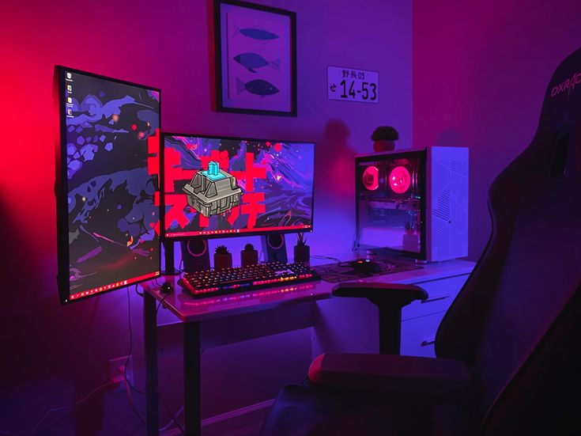

Periféricos y Equipos
Los periféricos permiten la interacción entre el usuario y la computadora.
Incluyen dispositivos de entrada como teclado y mouse, y de salida como monitor.
También existen equipos completos como laptops y estaciones de trabajo.

